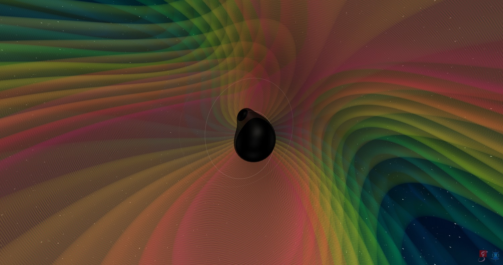

Research
Gravitational-wave searches are template-limited. Matched filtering compares the detector strain against a bank of modelled waveforms, and a signal whose physics is missing from that bank is a signal the pipeline will have a hard time finding. My research asks which physics has to go into the templates — precession, tides, and more and how to make it computationally efficient. I build template banks for precessing and tidally deformed binaries, develop waveform models for compact binaries in modified gravity, and run matched-filter searches on LIGO data with the SGNL/GstLAL pipelines.

Doctoral research · 2025–present
Tidal template banks for binary neutron star searches
Tidal effects in binary neutron stars are small but measurable, and they carry information about the neutron-star equation of state. Current searches for binary neutron stars use template banks that treat the stars as point particles, which is a good approximation for most of the parameter space. But for the heaviest, most deformable stars, the search loses sensitivity. I construct matched-filter template banks that carry tidal effects (and precession), and run injection campaigns to measure what they recover: how the fitting factor behaves across the mass–deformability space, where a point-particle bank starts to lose signal, and what bank size the added dimension actually costs. The goal is a tidally aware binary neutron star search.
Doctoral research · 2025–present
Precessing waveforms in dynamical Chern–Simons gravity
Dynamical Chern–Simons (dCS) gravity adds a parity-violating term to the Einstein–Hilbert action, coupling a scalar field to the Pontryagin density. For a compact binary this modifies the conservative dynamics and the spin precession; precisely the parts of the waveform that a precessing-binary search is most sensitive to.
Currently, I am working toward deriving the analytic equations of motion and waveform phasing for precessing compact binaries in dCS gravity in Mathematica.
Graduate research · 2024–2025 · M.S. thesis
Searching for precessing binary black holes
My M.S. thesis, Harmonic Decomposition versus Metric-Based Template Banks in Precessing Gravitational-Wave Searches, compared two strategies for generating high-dimensional template banks with precession.
Methods and tools
Analysis
- Matched filtering and template-bank construction
- Software injection campaigns and fitting-factor studies
- Bayesian and Fisher-matrix parameter estimation
- High-performance computing and scientific machine learning
Software
- GstLAL / SGNL, PyCBC, Bilby, LALSuite
- Python (NumPy, SciPy, Matplotlib, PyTorch, scikit-learn)
- Mathematica, C, Julia, Jax, Bash
- Slurm and HTCondor on HPC clusters; Git, LaTeX, Linux
Code
Python
scientific-ml
Scientific machine-learning coursework and experiments.
Julia
numerical-analysis
Numerical methods implemented from scratch: quadrature, root finding, ODE integrators, linear algebra.
C
parallel-computing-basics
High-performance scientific computing exercises in C — shared- and distributed-memory parallelism.